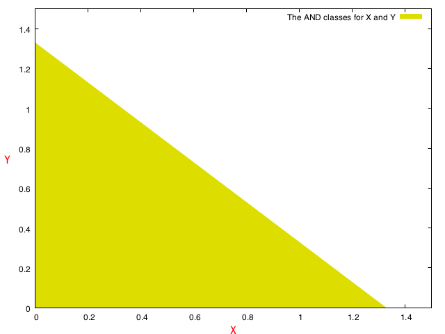

A Neural Network Primer
Artifical neural networks are a fascinating topic. And it's meta, because we as biological neural network organisms have attempted to model understanding our own selves using the field of artificial neural networks.
While this article uses neural networks as the primary topic to focus on, much of the article applies to the topic of machine learning too.
What is Machine Learning?
Machine learning is, simply put
- Learning
- Using what was learned
Learning is modeled as a function implementation, but done in two parts - strategy and tactic, to give a somewhat amusing analogy.
Strategy, in more words, is the algorithm chosen - it is akin to a formula/equation in a symbolic form. Tactic is when we substitute some specific values for the "parameters" (and, not for the variables).
When we say
$ax + by = c$
The "parameters" are a, b and c, while x and y are the variables. The strategy in this case is the linear equation. The tactic is some particular choices of a, b and c.
Coming back
Consider a function $f$ such that
| $f(0, 0) = 0$ |
| $f(1, 0) = 0$ |
| $f(0, 1) = 0$ |
| $f{}(1, 1) = 1$ |
Now comes the interesting bit - something that is so simple that once can miss the point completely. Let's posit $f$ as our machine learning function in the sense described above. On the premises introduced initially, $f$ is implemented in the following two steps
- A programmatic implementation that is capable of being configured for a class of use-cases
- A learning phase that learns the above table and can answer questions that follow this known pattern. But, but - what does the term "programmatic implementation" signify, you ask?
Here's one example of $f$ that can satisfy the above, in our favourite language
def f(x, y):
if x == 0 and y == 0:
return 0
if x == 1 and y == 0:
return 0
if x == 0 and y == 1:
return 0
return 1We have an implementation, and it already satisfies the table above. Bummer - we have a new-born function that has already passed grade 10. Doesn't need no school!
Let's ride further. How about the following table?
| $f(0, 0) = 0$ |
| $f{}(1, 0) = 1$ |
| $f{}(0, 1) = 1$ |
| $f{}(1, 1) = 1$ |
$f$ is now attending junior college, and realises that there's more to the world than just the AND table. OR, does it?
Generalizing the implementation
Our $f$ doesn't solve for the OR table with the previous implementation. So, here's a naïve implementation - something that we want to discard immediately after presenting for its stupidity!
def or(x, y):
if x == 0 and y == 0:
return 0
if x == 1 and y == 0:
return 1
if x == 0 and y == 1:
return 1
return 1Presenting a better idea after stupid makes it seem brilliant, right?
There's a thin line between…
What's the better idea? Literally - there's a thin line between the 0's and the 1's. We're looking for discrete 0/1 answers. How about considering x and y as points in 2-D space separated into 2 half-planes by a straight line - each part representing either of the 0 and the 1 exclusively?
$z = \text{sgn}(ax + by + c)$
$z \in{} {0, 1}$
If you already see it, great! If not, consider the fact that now we have an equation in a and b that can be applied to some combinations of (x, y) output a single value in the set {0, 1}
For two distinct combination pairs of (a, b), we can have the same function implementation solve for both AND and OR. Our choices of (a, b) pairs simply moves and/or rotates the partitioning line.
OR
OR has a lower threshold for a positive outcome. Here's one solution that will work. (Note: We consider the sign of 0 as positive - so, sign(0) = 1. But if it does not convince you, consider replacing 1 with 0.99)
$z = \text{sgn}(x + y - 1)$
| x | y | z |
|---|---|---|
| 0 | 0 | 0 |
| 1 | 0 | 1 |
| 0 | 1 | 1 |
| 1 | 1 | 1 |
Below is a visual representation of another solution that works. The greenish-yellow portion represents 0.

AND
AND has a higher threshold. One solution that works is presented below.
$z = \text{sgn}(x + y - 1.5)$
| x | y | z |
|---|---|---|
| 0 | 0 | 0 |
| 1 | 0 | 0 |
| 0 | 1 | 0 |
| 1 | 1 | 1 |
Visually, another solution that works. 
There are multiple combinations of (a, b) that satisfy both. We can pick any that we like as long as they satisfy our thresholds. Our example is simplified on purpose - and shows that the discriminant lines for both cases are just laterally translated lines with the same slope. Obviously, there's no constraint on the slope as long as the line is not parallel to any of the axes.
**
Wait. Where is the learning?
Smart question. Let me guess - you are also going to ask
- What about the two steps mentioned above? What is the explicitly programmed "generic" version?
- And where are the bespoke versions for AND and OR?
Kidding - you, dear reader, are smart enough to have noticed the bespoke implementations above. We only have to show the first step, first, and we are all set. Mostly…
The generalised version…
… is the straight line - the discriminant - with variables a, b and c. That - that is the parameterized implementation.
And the learning…
… is the act of finding combinations of (a, b, c) that satisfy our constraints. Note that even for our OR and AND tables, infinitely many combinations of (a, b, c) are possible. You can arrive at any correct combination and live with it happily. Unless you don't… and we will address that too in a bit.
We are now descending into numerical computing territory to find our "model parameters." But do appreciate the fact that the same equation can solve for both AND and OR with just different value combinations for (a, b, c).
And thus, we segue into…
Perceptrons (Neurons)
A perceptron is a computational model of the biological neuron - and for our purposes, we will use both interchangeably post this clarification.
It's just a function…
A perceptron is a computing unit – a function that acts on its input to compute an outcome. It discerns between different inputs and slots them into some categories. Mostly, two categories. Given some input, it either decides to stay inert, or fire a signal for the next-in-line perceptron to consume as their input. (I'm obviously simplifying here…)
That's akin to a simple function which outputs either a 0 or a 1. Geddit?
What we had above - the discriminant function - was but a perceptron, but presented differently. And it works very well for the simple use-cases of AND and OR where the outputs are two classes that are linearly separable.
Getting somewhat bit real
Advancing our observation further - you'll notice that with the above decision functions, our inputs need not be just the binary values 0 and 1, but can take up some fuzziness and be real values. As long as they
stay within some acceptable ranges, passing them to the above functions will give us outcomes we will fuzzily agree with. The outcome is either class 0 or class 1.
And, the neural network?
The and and or functions classify their inputs into two groups. What we have above is an absolutely naïve classifier — a classifier that we understand the internals of enough to represent them as those equations above. We encoded what we already knew into those functions.
The premise of (artificial) neural networks is to save us from the trouble of finding specific solutions for really arbitrary problems. Just like humans learn and acquire new knowledge and skills. Imagine if we fed the above truth tables to a black box, with x and y as our input, and z as the expected outcome. And in turn, this black box learnt the rules and then readied itself to respond with z values for any combination of x and y we threw at it?
Not hard, right? We could cache all combinations of the input and corresponding output, and respond back with the right values. That's eminently doable for the small size of the training dataset we have. But it breaks down miserably when we unconstrain the input values (add some noise), or even deal with unforeseen input values that are different from the training data by wider margins.
As a first step towards creating such an entity, we can approximate the black box as a linear regression. And training it as an activity of solving this linear regression. The general equation looks as follows, for the two input-signal scenario
$z = (w_{0} x + w_{1} y >= c)$
Or, making it somewhat more general and rearranging terms to be one one side
$z = (c + \Sigma{}w_{i}\cdot{}x_{i} >= 0)$
Which can again be re-written more generally as
$$Z = (c + W^{T} \cdot X >= 0)$$
Where W and X are the weight and input matrices respectively. So, we could imagine this single neuron that
References
- A Neural Network Primer - by David W. Croft